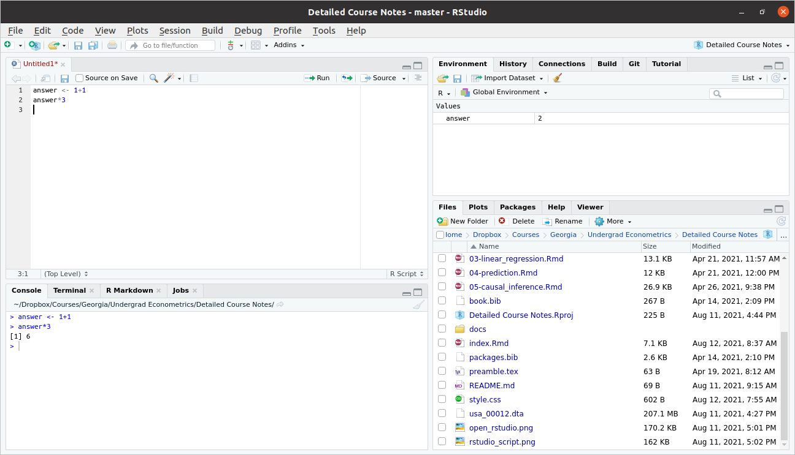

Topic 2 Statistical Programming
We will learn a lot more about statistical programming this semester, but we’ll start with a crash course on R with the idea of getting you up-and-running.
I listed a few references in the Introduction, but this section will mostly follow the discussion in Introduction to Data Science: Data Analysis and Prediction Algorithms with R, by Rafael Irizarry. I’ll abbreviate this reference as IDS throughout this section.
IDS is not specifically geared towards Econometrics, but I think it is a really fantastic book and resource. In this section, I cover what I think are the most important basics of R programming and additionally point you to the references for the material that I cover in class. But I would strongly recommend reading all of the first 5 chapters of IDS over the next couple of weeks. We will basically only cover the first 5 chapters in our class, but the course should set you up so that the remaining 35 chapters of the book can serve as helpful reference material throughout the rest of the semester.
2.1 Setting up R
This section covers how to set up R and RStudio and then what RStudio will look like when you open it up.
2.1.1 What is R?
Related Reading: IDS 1.1
R is a statistical programming language. This is important for two reasons
It looks like a “real” programming language. In my view, this is a big advantage. And many of the programming skills that we will learn in this class will be transferable. What I mean is that, if you one day want to switch to writing code in Stata or Python, I think the switch should be not-too-painful because learning new “syntax” (things like where to put the semi-colons) is usually relatively easy compared to the “way of thinking” about how to write code. Some other statistical programming languages are more “canned” than R. In some sense, this makes them easier to learn, but this also comes with the drawback that whatever skills that you learn are quite specific to that one language.
Even though R is a real programming language, it is geared towards statistics. Compared to say, Matlab, a lot of common statistical procedures (e.g., running a regression) will be quite easy for you.
R is very popular among statisticians, computer scientists, economists.
It is easy to share code across platforms: Linux, Windows, Mac. Besides that, it is easy to write and contribute extensions. I have 10+ R packages that you can easily download and immediately use.
There is a large community, and lots of available, helpful resources.
First place to look if you don’t know how to do something: DuckDuckGo (or…err…Google)!
StackOverflow
2.1.2 Downloading R
We will use R (https://www.r-project.org/) to analyze data. R is freely available and available across platforms. You should go ahead and download R for your personal computer as soon as possible — this should be relatively straightforward. It is also available at most computer labs on campus.
2.1.3 RStudio
Base R comes with a lightweight development environment (i.e., a place to write and execute code), but most folks prefer RStudio as it has more features. You can download it here: https://www.rstudio.com/products/rstudio/download/#download; choose the free version based on your operating system (Linux, Windows, Mac, etc.).
2.1.4 RStudio Development Environment
Related Reading: IDS 1.4
When you first open Rstudio, it will look something like this

Typically, we will write scripts, basically just as a way to save the code that we have written. Go to File -> New File -> R Script. This will open up a new pane, and your screen should look something like this

Let’s look around here. The top left pane is called the “Source Pane.” It is where you can write an R script. Try typing
1+1in that pane. This is a very simple R program. Now, type Ctrl+s to save the script. This will likely prompt you to provide a name for the script. You can call it first_script.R or something like that. The only thing that really matters is that the file name ends in “.R” (although you should at least give the file a reasonably descriptive name).
Now let’s move to the bottom left pane. This is called the “Console Pane.” It is where the actual computations happen in R (Notice that, although we have already saved our first script, we haven’t actually run any code). Beside the blue arrow in that pane, try typing
2+2and then press ENTER. This time you should actually see the answer.
Now, let’s go back to the Source pane. Often, it is convenient to run R programs line by line (mainly in order for it to be easy for you to digest the results). You can do this by pressing Ctrl+ENTER on any line in your script for it to run next. Try this on the first line of your script file where we previously typed 1+1. This code should now run, and you should be able to see the result down in the bottom left Console pane.
We will ignore the two panes on the right for now and come back to them once we get a little more experience programming in R.
2.2 Installing R Packages
Related Reading: IDS 1.5
When you download R, you get “base” R. Base R contains “basic” functions that are commonly used by most R users. To give some examples, base R gives you the ability add, subtract, divide, or multiply numbers. Base R gives you the ability to calculate the mean (the function is called mean) or standard deviation (the function is called sd) of a vector of numbers.
Base R is quite powerful and probably the majority of code you will write in R will only involve Base R.
That being said, there are many cases where it is useful to expand the base functionality of R. This is done through packages. Packages expand the functionality of R. R is open source so these packages are contributed by users.
It also typically wouldn’t make sense for someone to install all available R packages. For example, a geographer might want to install a much different set of packages relative to an economist. Therefore, we will typically install only the additional functionality that we specifically want.
Example 2.1 In this example, we’ll install the dslabs package (which is from the IDS book) and the lubridate package (which is a package for working with dates in R).
# install dslabs package
install.packages("dslabs")
# install lubridate package
install.packages("lubridate")Installing a package is only the first step to using a package. You can think of installing a package like downloading a package. To actually use a package, you need to load it into memory (i.e., “attach” it) or at least be clear about the package where a function that you are trying to call comes from.
Example 2.2 Dates can be tricky to work with in R (and in programming languages generally). For example, they are not exactly numbers, but they also have more structure than just a character string. The lubridate package contains functions for converting numbers/strings into dates.
bday <- "07-15-1985"
class(bday) # R doesn't know this is actually a date yet
#> [1] "character"
# load the package
library(lubridate)
# mdy stands for "month, day, year"
# if date were in different format, could use ymd, etc.
date_bday <- mdy(bday)
date_bday
#> [1] "1985-07-15"
# now R knows this is a date
class(date_bday)
#> [1] "Date"Another (and perhaps better) way to call a function from a package is to use the :: syntax. In this case, you do not need the call to library from above. Instead, you can try
lubridate::mdy(bday)
#> [1] "1985-07-15"This does exactly the same thing as the code before. What is somewhat better about this code is that it is easier to tell that the mdy function came from the lubridate package.
2.2.1 A list of useful R packages
AER— package containing data from Applied Econometrics with Rwooldridge— package containing data from Wooldridge’s text bookggplot2— package to produce sophisticated looking plotsdplyr— package containing tools to manipulate datahaven— package for loading different types of data filesplm— package for working with panel datafixest— another package for working with panel dataivreg— package for IV regressions, diagnostics, etc.estimatr— package that runs regressions but with standard errors that economists often like more than the default options inRmodelsummary— package for producing nice output of more than one regression and summary statistics
As of this writing, there are currently 18,004 R packages available on CRAN (R’s main repository for contributed packages).
2.3 R Basics
Related Reading: IDS 2.1
In this section, we’ll start to work towards writing useful R code.
2.3.1 Objects
Related Reading: IDS 2.2
The very first step to writing code that can actually do something is to able to store things. In R, we store things in objects (perhaps sometimes I will also use the word variables).
Earlier, we used R to calculate \(1+1\). Let’s go back to the Source pane (top left pane in RStudio) and type
answer <- 1 + 1Press Ctrl+ENTER on this line to run it. You should see the same line down in the Console now.
Let’s think carefully about what is happening here
answeris the name of the variable (or object) that we are creating here.the
<-is the assignment operator. It means that we should assign whatever is on the right hand side of it to the variable that is on the left hand side of it1+1just computes \(1+1\) as we did earlier. Soon we will put more complicated expressions here.
You can think about the above code as computing \(1+1\) and then saving it in the variable answer.
Practice: Try creating variable called five_squared that is equal to \(5 \times 5\) (multiplication in R is done using the * symbol).
There are a number of reasons why you might like to create an object in R. Perhaps the main one is so that you can reuse it. Let’s try multiplying answer by \(3\).
answer*3
#> [1] 6If you wanted, you could also save this as its own variable too.
2.3.2 Workspace
Related Reading: IDS 2.2
Before we move on, I just want to show you what my workspace looks like now.

As we talked about above, you can see the code in my script in the Source pane in the top left. You can also see the code that I actually ran in the Console pane on the bottom left.
Now, take a look at the top right pane. You will see under the Environment tab that answer shows up there with a value of 2. The Environment tab keeps track of all the variables that you have created in your current session. A couple of other things that might be useful to point out there.
Later on in the class, we will often import data to work with. The “Import Dataset” button that is located in this top right pane is often useful for this.
Occasionally, you might get into the case where you have saved a bunch of variables and it would be helpful to “start over.” The broom in this pane will “clean” your workspace (this just means delete everything).
2.4 Functions in R
Related Reading: IDS 2.2
R has a large number of helpful, built-in functions. Let’s start with a pretty representative example: computing logarithms. This can be done using the R function log.
log(5)
#> [1] 1.609438You can tell this is a function because of the parentheses. The 5 inside of the parentheses is called the argument of the function. As practice, try computing the \(\log\) of 7.
Side Comment: As a reminder, the logarithm of some number, let’s call it \(b\), is is the value of \(a\) that solves \(\textrm{base}^a = b\).
The default base in R is \(e \approx 2.718\), so that log(5) actually computes what you might be more used to calling the “natural logarithm.” You can change the default value of the base by adding an extra argument to the function.
log(5, base=10)
#> [1] 0.69897In order to learn about what arguments are available (and what they mean), you can access the help files for a particular function by running either
help(log)
?logand, of course, substituting the name of whatever function you want to learn about in place of log.
In RStudio, it can also be helpful to press Tab and RStudio will provide possible completions to the function you are typing as well as what arguments can be provided to that function.
Practice: R has a function for computing absolute value (you’ll have to find the name of it on your own). Try computing the absolute value of \(5\) and \(-5\). Try creating a variable called negative_three that is equal to \(-3\); then, try to compute the absolute value of negative_three.
2.5 Data types
Related Reading: IDS 2.4
2.5.1 Numeric Vectors
The most basic data type in R is the vector. In fact, above when we created variables that were just a single number, they are actually stored as a numeric vector.
To more explicitly create a vector, you can use the c function in R. For example, let’s create a vector called five that contains the numbers 1 through 5.
five <- c(1,2,3,4,5)We can print the contents of the vector five just by typing its name
five
#> [1] 1 2 3 4 5Another common operation on vectors is to get a particular element of a vector. Let me give an example
five[3]
#> [1] 3This code takes the vector five and returns the third element in the vector. Notice that the above line contains braces, [ and ] rather than parentheses.
If you want several different elements from a vector, you can do the following
five[c(1,4)]
#> [1] 1 4This code takes the vector five and returns the first and fourth element in the vector.
One more useful function for vectors is the function length. This tells you the number of elements in vector. For example,
length(five)
#> [1] 5which means that there are five total elements in the vector five.
2.5.2 Vector arithmetic
Related Reading: IDS 2.11
The main operations on numeric vectors are +, -, *, / which correspond to addition, subtraction, multiplication, and division. Often, we would like to carry out these operations on vectors.
There are two main cases. The first case is when you try to add a single number (i.e., a scalar) to all the elements in a vector. In this setup, the operation will happen element-wise which means the same number will be added to all numbers in the vector. This will be clear with some examples.
five <- c(1,2,3,4,5)
# adds one to each element in vector
five + 1
#> [1] 2 3 4 5 6
# also adds one to each element in vector
1 + five
#> [1] 2 3 4 5 6Similar things will happen with the other mathematical operations above. Here are some more examples:
five * 3
#> [1] 3 6 9 12 15
five - 3
#> [1] -2 -1 0 1 2
five / 3
#> [1] 0.3333333 0.6666667 1.0000000 1.3333333 1.6666667The other interesting case is what happens when you try to apply any of the same mathematical operators to two different vectors.
# just some random numbers
vec2 <- c(8,-3,4,1,7)
five + vec2
#> [1] 9 -1 7 5 12
five - vec2
#> [1] -7 5 -1 3 -2
five * vec2
#> [1] 8 -6 12 4 35
five / vec2
#> [1] 0.1250000 -0.6666667 0.7500000 4.0000000 0.7142857You can immediately see what happens here. For example, for five + vec2, the first element of five is added to the first element of vec2, the second element of five is added to the second element of vec2 and so on. Similar things happen for each of the other mathematical operations too.
There’s one other case that might be interesting to consider too. What happens if you try to apply these mathematical operations to two vectors of different lengths? Let’s find out
vec3 <- c(2,6)
five + vec3
#> Warning in five + vec3: longer object length is not a multiple of shorter object
#> length
#> [1] 3 8 5 10 7You’ll notice that this computes something but it also issues a warning. What happens here is that the result is equal to the first element of five plus the first element of vec3, the second of five plus the second element of vec3, the third element of five plus the first element of vec3, the fourth element of five plus the second element of vec3, and the fifth element of five plus the first element of vec3. What’s happening here is that, since vec3 contains fewere elements that five, the elements of vec3 are getting recycled. In my experience, this warning often indicates a coding mistake. There are many cases where I want to add the same number to all elements in a vector, and many other cases where I want to add two vectors that have the same length, but I cannot think of any cases where I would want to add two vectors the way that is being carried out here.
The same sort of things will happen with subtraction, multiplication, and division (feel free to try it out).
2.5.3 More helpful functions in R
This is definitely an incomplete list, but I’ll point you here to some more functions in R that are often helpful along with quick examples of them.
seqfunction — creates a “sequence” of numbersseq(2,7) #> [1] 2 3 4 5 6 7sumfunction — computes the sum of a vector of numberssum(c(1,5,8)) #> [1] 14sort,order, andrevfunctions — functions for understanding the order or changing the order of a vectorsort(c(3,1,5)) #> [1] 1 3 5 order(c(3,1,5)) #> [1] 2 1 3 rev(c(3,1,5)) #> [1] 5 1 3%%— modulo function (i.e., returns the remainder from dividing one number by another)8 %% 3 #> [1] 2 1 %% 3 #> [1] 1
Practice: The function seq contains an optional argument length.out. Try running the following code and seeing if you can figure out what length.out does.
seq(1,10,length.out=5)
seq(1,10,length.out=10)
seq(1.10,length.out=20)2.5.4 Other types of vectors
There are other types of vectors in R too. Probably the main two other types of vectors are character vectors and logical vectors. We’ll talk about character vectors here and defer logical vectors until later. Character vectors are often referred to as strings.
We can create a character vector as follows
string1 <- "econometrics"
string2 <- "class"
string1
#> [1] "econometrics"The above code creates two character vectors and then prints the first one.
Side Comment c stands for “concatenate.” Concatenate is a computer science word that means to combine two vectors. Probably the most well known version of this is “string concatenation” that combines two vectors of characters. Here is an example of string concatenation.
c(string1, string2)
#> [1] "econometrics" "class"Sometimes string concatenation means to put two (or more strings) into the same string. This can be done using the paste command in R.
paste(string1, string2)
#> [1] "econometrics class"Notice that paste puts in a space between string1 and string2. For practice, see if you can find an argument to the paste function that allows you to remove the space between the two strings.
2.5.5 Data Frames
Another very important type of object in R is the data frame. I think it is helpful to think of a data frame as being very similar to an Excel spreadsheet — sort of like a matrix or a two-dimensional array. Each row typically corresponds to a particular observation, and each column typically provides the value of a particular variable for that observation.
Just to give a simple example, suppose that we had firm-level data about the name of the firm, what industry a firm was in, what county they were located in, and their number of employees. I created a data frame like this (it is totally made up, BTW) and show it to you next
firm_data| name | industry | county | employees |
|---|---|---|---|
| ABC Manufacturing | Manufacturing | Clarke | 531 |
| Martin’s Muffins | Food Services | Oconee | 6 |
| Down Home Appliances | Manufacturing | Clarke | 15 |
| Classic City Widgets | Manufacturing | Clarke | 211 |
| Watkinsville Diner | Food Services | Oconee | 25 |
Side Comment: If you are following along on R, I created this data frame using the following code
firm_data <- data.frame(name=c("ABC Manufacturing", "Martin\'s Muffins", "Down Home Appliances", "Classic City Widgets", "Watkinsville Diner"),
industry=c("Manufacturing", "Food Services", "Manufacturing", "Manufacturing", "Food Services"),
county=c("Clarke", "Oconee", "Clarke", "Clarke", "Oconee"),
employees=c(531, 6, 15, 211, 25))Often, we’ll like to access a particular column in a data frame. For example, you might want to calculate the average number of employees across all the firms in our data.
Typically, the easiest way to do this, is to use the accessor symbol, which is $ in R. This will make more sense with an example:
firm_data$employees
#> [1] 531 6 15 211 25firm_data$employees just provides the column called “employees” in the data frame called “firm_data.” You can also notice that firm_data$employees is just a numeric vector. This means that you can apply any of the functions that we have been covering on it
mean(firm_data$employees)
#> [1] 157.6
log(firm_data$employees)
#> [1] 6.274762 1.791759 2.708050 5.351858 3.218876Side Comment: Notice that the function mean and log behave differently. mean calculates the average over all the elements in the vector firm_data$employees and therefore returns a single number. log calculates the logarithm of each element in the vector firm_data$employees and therefore returns a numeric vector with five elements.
Side Comment:
The $ is not the only way to access the elements in a data frame. You can also access them by their position. For example, if you want whatever is in the third row and second column of the data frame, you can get it by
firm_data[3,2]
#> [1] "Manufacturing"Sometimes it is also convenient to recover a particular row or column by its position in the data frame. Here is an example of recovering the entire fourth row
firm_data[4,]
#> name industry county employees
#> 4 Classic City Widgets Manufacturing Clarke 211Notice that you just leave the “column index” (which is the second one) blank
Side Comment: One other thing that sometimes takes some getting used to is that, for programming in general, you have to be very precise. Suppose you were to make a very small typo. R is not going to understand what you mean. See if you can spot the typo in the next line of code.
firm_data$employes
#> NULLA few more useful functions for working with data frames are:
nrowandncol— returns the number of rows or columns in the data framecolnamesandrownames— returns the names of the columns or rows
2.5.6 Lists
Vectors and data frames are the main two types of objects that we’ll use this semester, but let me give you a quick overview of a few other types of objects. Let’s start with lists. Lists are very generic in the sense that they can carry around complicated data. If you are familiar with any object oriented programming language like Java or C++, they have the flavor of an “object,” in the object-oriented sense.
I’m not sure if we will see any examples this semester where you have to use a list. But here is an example. Suppose that we wanted to put the vector that we created earlier five and the data frame that we created earlier firm_data into the same object. We could do it as follows
unusual_list <- list(numbers=five, df=firm_data)You can access the elements of a list in a few different ways. Sometimes it is convenient to access them via the $
unusual_list$numbers
#> [1] 1 2 3 4 5Other times, it is convenient to access them via their position in the list
unusual_list[[2]] # notice the double brackets
#> name industry county employees
#> 1 ABC Manufacturing Manufacturing Clarke 531
#> 2 Martin's Muffins Food Services Oconee 6
#> 3 Down Home Appliances Manufacturing Clarke 15
#> 4 Classic City Widgets Manufacturing Clarke 211
#> 5 Watkinsville Diner Food Services Oconee 252.5.7 Matrices
Matrices are very similar to data frames, but the data should all be of the same type. Matrices are very useful in some numerical calculations that are beyond the scope of this class. Here is an example of a matrix.
mat <- matrix(c(1,2,3,4), nrow=2, byrow=TRUE)
mat
#> [,1] [,2]
#> [1,] 1 2
#> [2,] 3 4You can access elements of a matrix by their position in the matrix, just like for the data frame above.
# first row, second column
mat[1,2]
#> [1] 2
# all rows in second column
mat[,2]
#> [1] 2 42.5.8 Factors
Sometimes variables in economics are categorical. This sort of variable is somewhat between a numeric variable and a string. In R, categorical variables are called factors.
A good example of a categorical variable is firm_data$industry. It tells you the “category” of the industry that a firm is in.
Oftentimes, we may have to tell R that a variable is a “factor” rather than just a string. Let’s create a variable called industry that contains the industry from firm_data but as a factor.
industry <- as.factor(firm_data$industry)
industry
#> [1] Manufacturing Food Services Manufacturing Manufacturing Food Services
#> Levels: Food Services ManufacturingA useful package for working with factor variables is the forcats package.
2.5.9 Understanding an object in R
Sometimes you may be in the case where there is a variable where you don’t know what exactly it contains. Some functions that are helpful in this case are
class— tells you, err, the class of an object (i.e., its “type”)head— shows you the “beginning” of an object; this is especially helpful for large objects (like some data frames)str— stands for “structure” of an object
Let’s try these out
class(firm_data)
#> [1] "data.frame"
# typically would show the first five rows of a data frame,
# but that is the whole data frame here
head(firm_data)
#> name industry county employees
#> 1 ABC Manufacturing Manufacturing Clarke 531
#> 2 Martin's Muffins Food Services Oconee 6
#> 3 Down Home Appliances Manufacturing Clarke 15
#> 4 Classic City Widgets Manufacturing Clarke 211
#> 5 Watkinsville Diner Food Services Oconee 25
str(firm_data)
#> 'data.frame': 5 obs. of 4 variables:
#> $ name : chr "ABC Manufacturing" "Martin's Muffins" "Down Home Appliances" "Classic City Widgets" ...
#> $ industry : chr "Manufacturing" "Food Services" "Manufacturing" "Manufacturing" ...
#> $ county : chr "Clarke" "Oconee" "Clarke" "Clarke" ...
#> $ employees: num 531 6 15 211 25Practice: Try running class, head, and str on the vector five that we created earlier.
2.6 Logicals
Related Reading: IDS 2.13
All programming languages have ways of tracking whether variables meet certain criteria. These are often called Booleans or Logicals. For us, this will particularly come up in the context of subsetting data (i.e., selecting data based on some condition) and in running particular portions of code based on some condition.
Some main logical operators are ==, <=, >=, <, > corresponding to whether or not two things are equal, less than or equal to, greater than or equal, strictly less than, and strictly greater than. These can be applied to vectors. And the comparisons result in either TRUE or FALSE. Here are some examples
five <- c(1,2,3,4,5)
# only 3 is equal to 3
five == 3
#> [1] FALSE FALSE TRUE FALSE FALSE
# 1,2,3 are all less than or equal to 3
five <= 3
#> [1] TRUE TRUE TRUE FALSE FALSE
# 3,4,5, are all greater than or equal to 3
five >= 3
#> [1] FALSE FALSE TRUE TRUE TRUE
# 1,2 are strictly less than 3
five < 3
#> [1] TRUE TRUE FALSE FALSE FALSE
# 4,5 are strictly greater than 3
five > 3
#> [1] FALSE FALSE FALSE TRUE TRUEExample 2.3 Often, we might be interested in learning about a subset of our data. As a simple example, using our firm_data from earlier, you could imagine being interested in average employment for manufacturing firms.
We can do this using the subset function along with the logical operations we’ve learned in this section.
manufacturing_firms <- subset(firm_data, industry=="Manufacturing")
mean(manufacturing_firms$employees)
#> [1] 252.3333As practice, try creating a subset of firm_data based on firms having more than 100 employees.
2.6.1 Additional Logical Operators
Related Reading: IDS 2.13
There are a number of additional logical operators that can be useful in practice. Here, we quickly cover several more.
!=— not equalc(1,2,3) != 3 #> [1] TRUE TRUE FALSEWe can link together multiple logical comparisons. If we want to check whether multiple conditions hold, we can use “logical AND”
&; if we want to check whether any of multiple conditions hold, we can use “logical OR”|.# AND ( c(1,2,3,4,5) >= 3 ) & ( c(1,2,3,4,5) < 5 ) #> [1] FALSE FALSE TRUE TRUE FALSE # OR ( c(1,2,3,4,5) >= 4 ) | ( c(1,2,3,4,5) < 2 ) #> [1] TRUE FALSE FALSE TRUE TRUE%in%— checks whether the elements of one vector show up in another vector# 1 is in the 2nd vector, but 7 is not c(1,7) %in% c(1,2,3,4,5) #> [1] TRUE FALSEOften it is useful to check whether any logical conditions are true or all logical conditions are true. This can be done as follows
# this one is TRUE because 1 is in the 2nd vector any(c(1,7) %in% c(1,2,3,4,5)) #> [1] TRUE # this one is FALSE because 7 is not in the 2nd vector all(c(1,7) %in% c(1,2,3,4,5)) #> [1] FALSE
2.7 Programming basics
2.7.1 Writing functions
Related Reading: IDS 3.2
It is often helpful to write your own functions in R. If you ever find yourself repeating the same code over and over, this suggests that you should write this code as a function and repeatedly call the function.
Suppose we are interesting in solving the quadratic equation \[ ax^2 + bx + c = 0 \] If you remember the quadratic formula, the solution to this equation is \[ x = \frac{-b \pm \sqrt{b^2-4ac}}{2a} \] It would be tedious to calculate this by hand (especially if we wanted to calculate it for many different values of \(a\), \(b\), and \(c\)), so let’s write a function to do it.
quadratic_solver <- function(a, b, c) {
root1 <- ( -b + sqrt(b^2 - 4*a*c) ) / 2*a
root1
}Before we try this out, let’s notice a few things. First, while this particular function is for solving the quadratic equation, this is quite representative of what a function looks like in R.
quadratic_solver— This is the name of the function. It’s good to give your function a descriptive name related to what it does. But you could call it anything you want. If you wanted to call this functionuga, it would still work.the part
<- functionfinishes off assigning the function the namequadratic_solverand implies that we are writing down a function rather than avectorordata.frameor something else. This part will show up in all function definitions.the part
(a, b, c),a,b, andcare the names of the arguments to the function. In a minute when we call the function, we need to tell the function the particular values ofa,b, andcfor which to solve the quadratic equation. We could name these whatever we want, but, again, it is good to have descriptive names. When you write a different function, it can have as many arguments as you want it to have.the part
{ ... }everything that the function does should go between the curly bracketsthe line
root1 <- ( -b + sqrt(b^2 - 4*a*c) ) / 2*acontains the main thing that is calculated by our function. Notice that we only calculate one of the “roots” (i.e., solutions to the quadratic equation) because of the \(+\) in this expression.the line
root1R returns whatever variable is on the last line of the function. It might be somewhat more clear to writereturn(root1). The behavior of the code would be exactly the same, but it is just the more common “style” in R programming to not include the explicitreturn.
Now let’s try out our function
# solves quadratic equation for a=1, b=4, c=3
quadratic_solver(1,4,3)
#> [1] -1
# solves quadratic equation for a=-1, b=5, c=10
quadratic_solver(-1,5,10)
#> [1] -1.531129Two last things that are worth pointing out about functions:
Functions in R can be set up to take default values for some of their arguments
Because the arguments have names, if you are explicit about the name of the argument, then the order of the argument does not matter.
To give examples, let’s write a slightly modified version of our function to solve quadratic equations.
quadratic_solver2 <- function(a=1, b, c) {
root1 <- ( -b + sqrt(b^2 - 4*a*c) ) / 2*a
root1
}The only thing different here is that a takes the default value of 1. Now let’s try some different calls to quadratic_solver and quadratic_solver2
# solve again for a=1,b=4,c=3
quadratic_solver2(b=4,c=3)
#> [1] -1
# replace default and change order
quadratic_solver2(c=10,b=5,a=-1)
#> [1] -1.531129
# no default set for quadratic_solver so it will crash if a not provided
quadratic_solver(b=4,c=3)
#> Error in quadratic_solver(b = 4, c = 3): argument "a" is missing, with no default2.7.2 if/else
Related Reading: IDS 3.1
Often when writing code, you will want to do different things depending on some condition. Let’s write a function that takes in the number of employees that are in a firm and prints “large” if the firm has more than 100 employees and “small” otherwise.
large_or_small <- function(employees) {
if (employees > 100) {
print("large")
} else {
print("small")
}
}I think, at this point, this code should make sense to you. The only new thing is the if/else. The following is not code that will actually run but is just to help understand the logic of if/else.
if (condition) {
# do something
} else {
# do something else
}All that happens with if/else is that we check whether condition evaluate to TRUE or FALSE. If it is TRUE, the code will do whatever is inside the first set of brackets; if it is FALSE, the code will do whatever is in the set of brackets following else.
2.7.3 for loops
Related Reading: IDS 3.4
Often, we need to run the same code over and over again. A for loop is a main programming tool for this case (for loops show up in pretty much all programming languages).
We’ll have more realistic examples later on in the semester, but we’ll do something trivial for now.
out <- c()
for (i in 1:10) {
out[i] <- i*3
}
out
#> [1] 3 6 9 12 15 18 21 24 27 30The above code, starts with \(i=1\), calculates \(i*3\) (which is 3), and then stores that result in the first element of the vector out, then \(i\) increases to 2, the code calculates \(i*3\) (which is now 6), and stores this result in the second element of out, and so on through \(i=10\).
2.7.4 Vectorization
Related Reading: IDS 3.5
Vectorizing functions is a relatively advanced topic in R programming, but it is an important one, so I am including it here.
Because we will often be working with data, we will often be performing the same operation on all of the observations in the data. For example, suppose that you wanted to take the logarithm of the number of employees for all the firms in firm_data. One way to do this is to use a for loop, but this code would be a bit of a mess. Instead, the function log is vectorized — this means that if we apply it to a vector, it will calculate the logarithm of each element in the vector. Besides this, vectorized functions are often faster than for loops.
Not all functions are vectorized though. Let’s go back to our function earlier called large_or_small. This took in the number of employees at a firm and then printed “large” if the firm had more than 100 employees and “small” otherwise. Let’s see what happens if we call this function on a vector of employees (Ideally, we’d like the function to be applied to each element in the vector).
employees <- firm_data$employees
employees
#> [1] 531 6 15 211 25
large_or_small(employees)
#> Warning in if (employees > 100) {: the condition has length > 1 and only the
#> first element will be used
#> [1] "large"This is not what we wanted to have happen. It just reported whether or not the first firm was large or small, and then issued a warning that basically said that something may be going wrong here. What’s going on here is that the function large_or_small is not vectorized.
In order to vectorize a function, we can use one of a number of “apply” functions in R. I’ll list them here
sapply— this stands for “simplify” apply; it “applies” the function to all the elements in the vector or list that you pass in and then tries to “simplify” the resultlapply— stands for “list” apply; applies a function to all elements in a vector or list and then returns a listvapply— stands for “vector” apply; applies a function to all elements in a vector or list and then returns a vectorapply— applies a function to either the rows or columns of a matrix-like object (i.e., a matrix or a data frame) depending on the value of the argumentMARGIN
Let’s use sapply to vectorize large_or_small.
large_or_small_vectorized <- function(employees_vec) {
sapply(employees_vec, FUN = large_or_small)
}All that this will do is call the function large_or_small for each element in the vector employees. Let’s see it in action
large_or_small_vectorized(employees)
#> [1] "large"
#> [1] "small"
#> [1] "small"
#> [1] "large"
#> [1] "small"
#> [1] "large" "small" "small" "large" "small"This is what we were hoping for.
Side Comment: I also typically replace most all for loops with an apply function. In most cases, I don’t think there is much of a performance gain, but the code seems easier to read (or at least more concise).
Earlier we wrote a function to take a vector of numbers from 1 to 10 and multiply all of them by 3. Here’s how you could do this using sapply
sapply(1:10, function(i) i*3)
#> [1] 3 6 9 12 15 18 21 24 27 30which is considerably shorter.
One last thing worth pointing out though is that multiplication is already vectorized, so you don’t actually need to do sapply or the for loop; a better way is just
(1:10)*3
#> [1] 3 6 9 12 15 18 21 24 27 30Side Comment: A relatively popular alternative to apply functions are map functions provided in the purrr package.
Side Comment: It’s often helpful to have a vectorized version of if/else. In R, this is available in the function ifelse. Here is an alternative way to vectorize the function large_or_small:
large_or_small_vectorized2 <- function(employees_vec) {
ifelse(employees_vec > 100, "large", "small")
}
large_or_small_vectorized2(firm_data$employees)
#> [1] "large" "small" "small" "large" "small"Here you can see that ifelse makes every comparison in its first argument, and then returns the second element for every TRUE coming from the first argument, and returns the third element for every FALSE coming from the first argument.
ifelse also works with vectors in the second and third element. For example:
ifelse(c(1,3,5) < 4, yes=c(1,2,3), no=c(4,5,6))
#> [1] 1 2 6which picks up 1 and 2 from the second (yes) argument and 6 from the third (no) argument.
2.8 Advanced Topics
To conclude this section, I want to briefly point you towards some advanced material. We will probably brush up against some of this material this semester. That being said, R has some very advanced capabilities related to data science, data manipulation, and data visualization. If you have time/interest you might push further in all of these directions. By the end of the semester, we may not have mastered these topics, but they should at least be accessible to you.
2.8.1 Tidyverse
Related Reading: IDS Chapter 4 — strongly recommend that you read this
R has very good data cleaning / manipulating tools
Many of them are in the “tidyverse”
Mostly this semester, I’ll just give you a data set that is ready to be worked with. But as you move to your own research projects or do work for a company one day, you will realize that a major step in analyzing data is organizing (“cleaning”) the data in a way that you can analyze it
Main packages
ggplot2– see belowdplyr— package to manipulate datatidyr— more ways to manipulate datareadr— read in datapurrr— alternative versions ofapplyfunctions andforloopstibble— alternative versions ofdata.framestringr— tools for working with stringsforcats— tools for working with factors
I won’t emphasize these too much as they are somewhat advanced topics, but if you are interested, these are good (and marketable) skills to have
2.8.2 Data Visualization
Related Reading: IDS Ch. 6-11 — R has very good data visualization tools; strongly recommend that you read this
Another very strong point of
RBase
Rcomes with theplotcommand, but theggplot2package provides cutting edge plotting tools. These tools will be somewhat harder to learn, but we’ll useggplot2this semester as I think it is worth it.538’s graphs produced with ggplot
2.8.3 Reproducible Research
Related Reading: IDS Ch. 40
Rmarkdown is a very useful way to mix code and content
These notes are written in Rmarkdown, and I usually write homework solutions in Rmarkdown
If you are interested, you can view the source for this book at http://github.com/bcallaway11/econ_4750_notes. The source code for this chapter is in the file
01-statistical-programming.Rmd.If you are interested, Github is a very useful version control tool (i.e., keeps track of the version of your project, useful for merging projects, and sharing or co-authoring code) and Dropbox (also useful for sharing code). I use both of these extensively — in general, I use Github relatively more for bigger projects and more public projects and Dropbox more for smaller projects and early versions of projects.
2.8.4 Technical Writing Tools
This is largely beyond the scope of the course, but, especially for students in ECON 6750, I recommend that you look up Latex. This is a markup language mainly for writing technical, academic writing. The big payoff is on writing mathematical equations. The equations in the Course notes are written in Latex.
An easy way to get started here is to use the website Overleaf. This is also closely related to markdown/R-markdown discussed above (Latex tends to be somewhat more complicate which comes with some associated advantages and disadvantages).
2.9 Lab 1: Introduction to R Programming
For this lab, we will do several practice problems related to programming in R.
Create two vectors as follows
x <- seq(2,10,by=2) y <- c(3,5,7,11,13)Add
xandy, subtractyfromx, multiplyxandy, and dividexbyyand report your results.The geometric mean of a set of numbers is an alternative measure of central tendency to the more common “arithmetic mean” (this is the mean that we are used to). For a set of \(J\) numbers, \(x_1,x_2,\ldots,x_J\), the geometric mean is defined as
\[ (x_1 \cdot x_2 \cdot \cdots \cdot x_J)^{1/J} \]
Write a function called
geometric_meanthat takes in a vector of numbers and computes their geometric mean. Compute the geometric mean ofc(10,8,13)Use the
lubridatepackage to figure out how many days it has been since Jan. 1, 1981.mtcarsis one of the data frames that comes packaged with base R.How many observations does
mtcarshave?How many columns does
mtcarshave?What are the names of the columns of
mtcars?Print only the rows of
mtcarsfor cars that get at least 20 mpgPrint only the rows of
mtcarsthat get at least 20 mpg and have at least 100 horsepower (it is in the column calledhp)Print only the rows of
mtcarsthat have 6 or more cylinders (it is in the column labeldcyl) or at least 100 horsepowerRecover the 10th row of
mtcarsSort the rows of
mtcarsby mpg (from highest to lowest)
2.10 Lab 1: Solutions
x <- seq(2,10,by=2)
y <- c(3,5,7,11,13)
x+y
#> [1] 5 9 13 19 23
x-y
#> [1] -1 -1 -1 -3 -3
x*y
#> [1] 6 20 42 88 130
x/y
#> [1] 0.6666667 0.8000000 0.8571429 0.7272727 0.7692308geometric_mean <- function(x) {
J <- length(x)
res <- prod(x)^(1/J)
res
}
geometric_mean(c(10,8,13))
#> [1] 10.13159the_date <- lubridate::mdy("01-01-1981")
today <- lubridate::mdy("08-23-2021")
today - the_date
#> Time difference of 14844 daysnrow(mtcars) #> [1] 32ncol(mtcars) #> [1] 11colnames(mtcars) #> [1] "mpg" "cyl" "disp" "hp" "drat" "wt" "qsec" "vs" "am" "gear" #> [11] "carb"subset(mtcars, mpg >= 20) #> mpg cyl disp hp drat wt qsec vs am gear carb #> Mazda RX4 21.0 6 160.0 110 3.90 2.620 16.46 0 1 4 4 #> Mazda RX4 Wag 21.0 6 160.0 110 3.90 2.875 17.02 0 1 4 4 #> Datsun 710 22.8 4 108.0 93 3.85 2.320 18.61 1 1 4 1 #> Hornet 4 Drive 21.4 6 258.0 110 3.08 3.215 19.44 1 0 3 1 #> Merc 240D 24.4 4 146.7 62 3.69 3.190 20.00 1 0 4 2 #> Merc 230 22.8 4 140.8 95 3.92 3.150 22.90 1 0 4 2 #> Fiat 128 32.4 4 78.7 66 4.08 2.200 19.47 1 1 4 1 #> Honda Civic 30.4 4 75.7 52 4.93 1.615 18.52 1 1 4 2 #> Toyota Corolla 33.9 4 71.1 65 4.22 1.835 19.90 1 1 4 1 #> Toyota Corona 21.5 4 120.1 97 3.70 2.465 20.01 1 0 3 1 #> Fiat X1-9 27.3 4 79.0 66 4.08 1.935 18.90 1 1 4 1 #> Porsche 914-2 26.0 4 120.3 91 4.43 2.140 16.70 0 1 5 2 #> Lotus Europa 30.4 4 95.1 113 3.77 1.513 16.90 1 1 5 2 #> Volvo 142E 21.4 4 121.0 109 4.11 2.780 18.60 1 1 4 2subset(mtcars, (mpg >= 20) & (hp >= 100)) #> mpg cyl disp hp drat wt qsec vs am gear carb #> Mazda RX4 21.0 6 160.0 110 3.90 2.620 16.46 0 1 4 4 #> Mazda RX4 Wag 21.0 6 160.0 110 3.90 2.875 17.02 0 1 4 4 #> Hornet 4 Drive 21.4 6 258.0 110 3.08 3.215 19.44 1 0 3 1 #> Lotus Europa 30.4 4 95.1 113 3.77 1.513 16.90 1 1 5 2 #> Volvo 142E 21.4 4 121.0 109 4.11 2.780 18.60 1 1 4 2subset(mtcars, (cyl >= 6) | (hp >= 100)) #> mpg cyl disp hp drat wt qsec vs am gear carb #> Mazda RX4 21.0 6 160.0 110 3.90 2.620 16.46 0 1 4 4 #> Mazda RX4 Wag 21.0 6 160.0 110 3.90 2.875 17.02 0 1 4 4 #> Hornet 4 Drive 21.4 6 258.0 110 3.08 3.215 19.44 1 0 3 1 #> Hornet Sportabout 18.7 8 360.0 175 3.15 3.440 17.02 0 0 3 2 #> Valiant 18.1 6 225.0 105 2.76 3.460 20.22 1 0 3 1 #> Duster 360 14.3 8 360.0 245 3.21 3.570 15.84 0 0 3 4 #> Merc 280 19.2 6 167.6 123 3.92 3.440 18.30 1 0 4 4 #> Merc 280C 17.8 6 167.6 123 3.92 3.440 18.90 1 0 4 4 #> Merc 450SE 16.4 8 275.8 180 3.07 4.070 17.40 0 0 3 3 #> Merc 450SL 17.3 8 275.8 180 3.07 3.730 17.60 0 0 3 3 #> Merc 450SLC 15.2 8 275.8 180 3.07 3.780 18.00 0 0 3 3 #> Cadillac Fleetwood 10.4 8 472.0 205 2.93 5.250 17.98 0 0 3 4 #> Lincoln Continental 10.4 8 460.0 215 3.00 5.424 17.82 0 0 3 4 #> Chrysler Imperial 14.7 8 440.0 230 3.23 5.345 17.42 0 0 3 4 #> Dodge Challenger 15.5 8 318.0 150 2.76 3.520 16.87 0 0 3 2 #> AMC Javelin 15.2 8 304.0 150 3.15 3.435 17.30 0 0 3 2 #> Camaro Z28 13.3 8 350.0 245 3.73 3.840 15.41 0 0 3 4 #> Pontiac Firebird 19.2 8 400.0 175 3.08 3.845 17.05 0 0 3 2 #> Lotus Europa 30.4 4 95.1 113 3.77 1.513 16.90 1 1 5 2 #> Ford Pantera L 15.8 8 351.0 264 4.22 3.170 14.50 0 1 5 4 #> Ferrari Dino 19.7 6 145.0 175 3.62 2.770 15.50 0 1 5 6 #> Maserati Bora 15.0 8 301.0 335 3.54 3.570 14.60 0 1 5 8 #> Volvo 142E 21.4 4 121.0 109 4.11 2.780 18.60 1 1 4 2mtcars[10,] #> mpg cyl disp hp drat wt qsec vs am gear carb #> Merc 280 19.2 6 167.6 123 3.92 3.44 18.3 1 0 4 4# without reversing the order, we would order from lowest to smallest mtcars[rev(order(mtcars$mpg)),] #> mpg cyl disp hp drat wt qsec vs am gear carb #> Toyota Corolla 33.9 4 71.1 65 4.22 1.835 19.90 1 1 4 1 #> Fiat 128 32.4 4 78.7 66 4.08 2.200 19.47 1 1 4 1 #> Lotus Europa 30.4 4 95.1 113 3.77 1.513 16.90 1 1 5 2 #> Honda Civic 30.4 4 75.7 52 4.93 1.615 18.52 1 1 4 2 #> Fiat X1-9 27.3 4 79.0 66 4.08 1.935 18.90 1 1 4 1 #> Porsche 914-2 26.0 4 120.3 91 4.43 2.140 16.70 0 1 5 2 #> Merc 240D 24.4 4 146.7 62 3.69 3.190 20.00 1 0 4 2 #> Merc 230 22.8 4 140.8 95 3.92 3.150 22.90 1 0 4 2 #> Datsun 710 22.8 4 108.0 93 3.85 2.320 18.61 1 1 4 1 #> Toyota Corona 21.5 4 120.1 97 3.70 2.465 20.01 1 0 3 1 #> Volvo 142E 21.4 4 121.0 109 4.11 2.780 18.60 1 1 4 2 #> Hornet 4 Drive 21.4 6 258.0 110 3.08 3.215 19.44 1 0 3 1 #> Mazda RX4 Wag 21.0 6 160.0 110 3.90 2.875 17.02 0 1 4 4 #> Mazda RX4 21.0 6 160.0 110 3.90 2.620 16.46 0 1 4 4 #> Ferrari Dino 19.7 6 145.0 175 3.62 2.770 15.50 0 1 5 6 #> Pontiac Firebird 19.2 8 400.0 175 3.08 3.845 17.05 0 0 3 2 #> Merc 280 19.2 6 167.6 123 3.92 3.440 18.30 1 0 4 4 #> Hornet Sportabout 18.7 8 360.0 175 3.15 3.440 17.02 0 0 3 2 #> Valiant 18.1 6 225.0 105 2.76 3.460 20.22 1 0 3 1 #> Merc 280C 17.8 6 167.6 123 3.92 3.440 18.90 1 0 4 4 #> Merc 450SL 17.3 8 275.8 180 3.07 3.730 17.60 0 0 3 3 #> Merc 450SE 16.4 8 275.8 180 3.07 4.070 17.40 0 0 3 3 #> Ford Pantera L 15.8 8 351.0 264 4.22 3.170 14.50 0 1 5 4 #> Dodge Challenger 15.5 8 318.0 150 2.76 3.520 16.87 0 0 3 2 #> AMC Javelin 15.2 8 304.0 150 3.15 3.435 17.30 0 0 3 2 #> Merc 450SLC 15.2 8 275.8 180 3.07 3.780 18.00 0 0 3 3 #> Maserati Bora 15.0 8 301.0 335 3.54 3.570 14.60 0 1 5 8 #> Chrysler Imperial 14.7 8 440.0 230 3.23 5.345 17.42 0 0 3 4 #> Duster 360 14.3 8 360.0 245 3.21 3.570 15.84 0 0 3 4 #> Camaro Z28 13.3 8 350.0 245 3.73 3.840 15.41 0 0 3 4 #> Lincoln Continental 10.4 8 460.0 215 3.00 5.424 17.82 0 0 3 4 #> Cadillac Fleetwood 10.4 8 472.0 205 2.93 5.250 17.98 0 0 3 4
2.11 Coding Exercises
The
stringrpackage contains a number of functions for working with strings. For this problem create the following character vector in Rx <- c("economics", "econometrics", "ECON 4750")Install the
stringrpackage and use thestr_lengthfunction in the package in order to calculate the length (number of characters) in each element ofx.For this problem, we are going to write a function to calculate the sum of the numbers from 1 to \(n\) where \(n\) is some positive integer. There are actually a lot of different ways to do this.
Approach 1: write a function called
sum_one_to_n_1that uses the R functionsseqto create a list of numbers from 1 to \(n\) and then the functionsumto sum over that list.Approach 2: The sum of numbers from 1 to \(n\) is equal to \(n(n+1)/2\). Use this expression to write a function called
sum_one_to_n_2to calculate the sum from 1 to \(n\).
Approach 3: A more brute force approach is to create a list of numbers from 1 to \(n\) (you can use
seqhere) and add them up using aforloop — basically, just keep track of what the current total is and add the next number to the total in each iteration of the for loop. Write a function calledsum_one_to_n_3that does this.
Hint: All of the functions should look like
sum_one_to_n <- function(n) { # do something }Try out all three approaches that you came up with above for \(n=100\). What is the answer? Do you get the same answer using all three approaches?
The Fibonacci sequence is the sequence of numbers \(0,1,1,2,3,5,8,13,21,34,55,\ldots\) that comes from starting with \(0\) and \(1\) and where each subsequent number is the sum of the previous two. For example, the 5 in the sequence comes from adding 2 and 3; the 55 in the sequence comes from adding 21 and 34.
Write a function called
fibonaccithat takes in a numbernand computes the nth element in the Fibonacci sequence. For examplefibonacci(5)should return3andfibonacci(8)should return13.Consider an alternative sequence where, starting with the third element, each element is computed as the sum of the previous two elements (the same as with the Fibonacci sequence) but where the first two elements can be arbitrary. Write a function
alt_seq(a,b,n)whereais the first element in the sequence,bis the second element in the sequence, andnis which element in the sequence to return. For example, if \(a=3\) and \(b=7\), then the sequence would be \(3,7,10,17,27,44,71,\ldots\) andalt_seq(a=3,b=7,n=4) = 17.
Write a function
primethat takesnas an argument and returns a vector of all the prime numbers from \(1\) to \(n\).Base
Rincludes a data frame callediris. This is data about iris flowers (you can read the details by running?iris).How many observations are there in the entire data frame?
Calculate the average
Sepal.Lengthacross all observations iniris.Calculate the average
Sepal.Widthamong thesetosairis species.Sort
irisbyPetal.Lengthand print the first 10 rows.
Side Comment: The assignment operator,
<-, is a “less than sign” followed by a “hyphen.” It’s often convenient though to use the keyboard shortcutAlt+-(i.e., hold downAltand press the hypen key) to insert it. You can also use an=for assignment, but this is less commonly done in R.